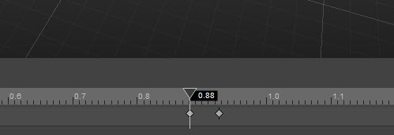
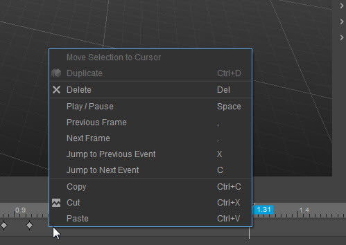
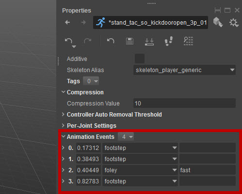
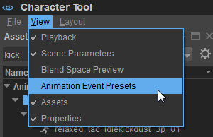
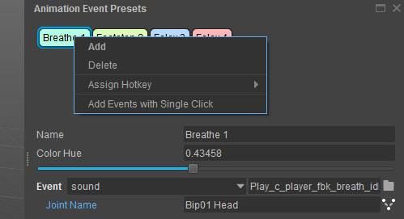

Overview
You can add Animation Events by double clicking on the timeline. Each animation can have a set of them:

The timeline has a context menu that gives you possibilities to jump between frames and events. It also contains hints about keyboard shortcuts:

Animation Events are also present in the Properties of an Animation:

They are stored in a separate ANIMEVENTS file. Such file is referred from skeleton parameters (CHRPARAMS) and contains lists of animation events per animation.
That is, with multiple animations in one file. Nevertheless they are saved when you save an animation entry. The same way you save *.animsettings.
If you need to quickly create a large amount of events you may use the AnimEvent Presets panel.

It gives you a set of quickly accessible animation events. You can add them to the timeline with a double-click, or by using assignable hotkeys (number keys 1-0).
